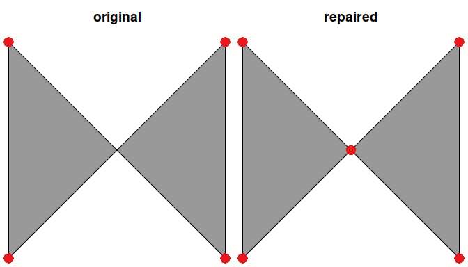

Automatic Repair of Spatial Polygons
Overview
The prepr R R package is used to repair broken spatial polygons. To achieve this, the package uses the constrained triangulation approach implemented in the prepair C++ library (Ledoux et al. 2014). Specifically, the st_prepair() function is used to repair polygons. For more information, please see the package vignette.
Installation
The latest version can be installed from the online source code repository using the following R code.
if (!require(remotes)) install.packages("remotes")
remotes::install_github("prioritizr/prepr")Windows
The Rtools software needs to be installed to install the prepr R package from source. This software provides system requirements from rwinlib.
Ubuntu
The gmp, mpfr, and gdal libraries need to be installed to install the prepr R package. For recent versions of Ubuntu (18.04 and later), these libraries are available through official repositories. They can be installed using the following system commands:
macOS
The pkg-config, gmp, mpfr, and gdal libraries are required. The easiest way to install these libraries is using HomeBrew. After installing HomeBrew, these libraries can be installed using the following commands in the system terminal:
Citation
We recommend citing the methodology that underpins the prepr R package. To cite this work, please use:
Ledoux H, Arroyo Ohori K, and Meijers M (2014) A triangulation-based approach to automatically repair GIS polygons. Computers & Geosciences 66:121–131.
Usage
Here we provide a short example showing how the prepr package can be used to repair broken polygon geometries. To start with, we will load the package. We will also load the sf package for working with spatial data.
# load packages
library(sf) # package for working with spatial data
library(prepr) # package for repairing spatial geometriesNext, we will create a broken spatial polygon.
# create broken polygon
x <- st_as_sfc("POLYGON((0 0, 0 10, 10 0, 10 10, 0 0))")
# verify that polygon is broken, and display reason why it's broken
st_is_valid(x, reason = TRUE)Now we will use the st_prepair() function to repair the broken polygon.
# repair the polygon
y <- st_prepair(x)
# verify that repaired polygon is NOT broken
st_is_valid(y)Finally, we can compare the two polygons. To achieve this, let’s plot both the two polygons (shown in gray) and also plot the vertices for the two polygons (shown in red).
# visualize the polygons
par(mfrow = c(1, 2), mar = c(0, 0, 2.5, 0))
plot(x, main = "original", col = "#999999")
points(st_coordinates(st_cast(x, "POINT")), col = "#e41a1c", pch = 16, cex = 2)
plot(y, main = "repaired", col = "#999999")
points(st_coordinates(st_cast(y, "POINT")), col = "#e41a1c", pch = 16, cex = 2)
Although we can see that both of the polygons (shown in gray) appear visually identical, the repaired polygon (y) has an additional vertex (red point) in the center of the ‘bowtie’. This extra vertex is important to maintain the validity fo the spatial polygon. For more information and additional examples, see the package vignette.
Getting help
If you have any questions about using the prepr R package or suggestions for improving it, please file an issue at the package’s online code repository.